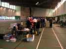
Amiens, un indoor du championnat. Un grand gymnase, tellement grand qu'on a pu y délimiter un terrain de compète et un autre, encore plus grand pour l'entraînement et l'amusement.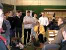
Avant tout, briefing. Dominique Miquet officie, suivi religieusement par tous les pilotes. C'est quand même très participatif et cool...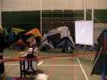
L'équipement est de première : sono musclée pour l'ambiance et les shows en musique, ordinateurs pour les classements, video-projecteur pour l'animation, avec des films d'Amiens outdoor, des diapos, etc...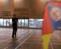
Et c'est parti. Les concurrents se succèdent et se... concurrencent. Je ne les mets pas tous, j'ai fait du monofil une bonne partie du temps, et puis l'éclairage était difficile, toujours en contre-jour, sorry ! Avec ce cerf-volant, j'ai fait moi-même un petit essai d'initiation à l'indoor : c'est pas si dur, faut garder la bête en mouvement, j'ai même passé un axel de chaque côté. Mais de là à me présenter au Championnat, y a du pain sur la planche ! Et puis, ce matin, j'ai mal aux mollets à force de marcher à reculons toute la journée (pilotable ou monofil, c'est toujours à reculons).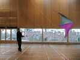
Là, c'est le gagnant de la catégorie Experts, mais j'anticipe. Pas besoin d'avoir un cerf-volant de toutes les couleurs avec du mylar armé etc. pour gagner ! Mais je peux pas dire que les couleurs de celui-là me mettent le coeur en fête...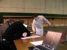
Il y a aussi du 4 lignes, avec surtout des révos, mais presque tous de fabrication maison.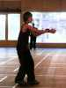
Toujours dans les 2 lignes, il y a 3 catégories : Novice, Intermédiaire, et Expert. Ici, Maxime (pas moi, Pillard) qui promet, bien qu'il se présente en compétition en mâchant son chewing-gum. Mais bah, c'est sans doute moi qui suit trop vieux jeu, de mon temps c'était malpoli...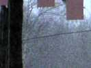
Heureusement qu'on est en indoor. Dehors, en arrivant un vent de tempête et dans la journée, torrents de pluie, grêle, et neige... Mais toujours un froid de canard, même dans le gymnase.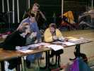
Pendant ce temps, le jury appelle, juge, réfléchit, se concerte.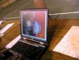
Mais la préparation des ordinateurs est parfois un peu délicate et entraîne sur des voies pas prévues...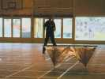
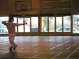
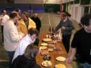
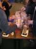
On poursuit l'apéritif avec les pâtés et hot-dogs, les appareils débitent à tout-va... Encore un petit coup de cidre (faut garder la tête froide pour l'après-midi), un dessert, des bonbons, des chocolats, mais arrêtez !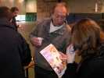
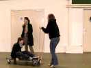
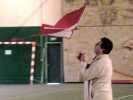
L'après-midi, c'est plus fun que la "Précision" le matin. Donc ballets en musique suivis ou entrecoupés d'exhibitions diverses. Le ballet de Bruno commence par le monofil et se poursuit par le pilotable, malheureusement abrégé par un wisker qui a percé la toile.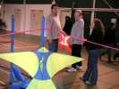
Michel Chantren va présenter un numéro de robot cervoliste remarquable (faut dire que c'est un champion du 4 lignes) !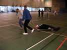
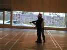
Le mannequin est mis debout et exhibe une face impressionnante.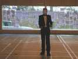
Vraiment très impressionnante !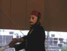
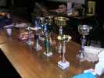
Mais tout a une fin. Les coupes et les lots (et ensuite un petit pot) attendent les pilotes, après tout le mal qu'ils s sont donné.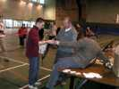
C'est Raphaël Jassin qui remportera la catégorie la plus haute, celle des Experts. Et, j'ai suivi, il le méritait largement.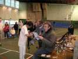
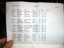
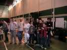
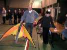
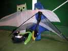
Et je gagne avec mon as de carreau un splendide Dreams de Cavaliers du Ciel monté en Skeeny UL. Mais saurai-je lui faire honneur ?